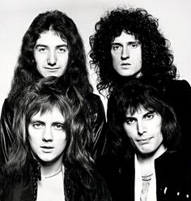
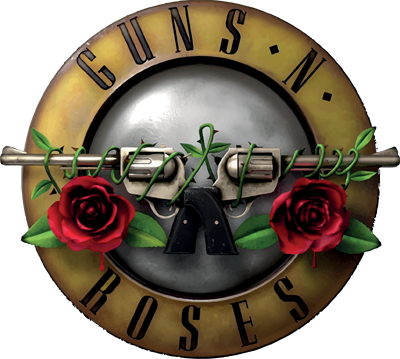

Queen
es una banda británica de rock formada en 1970 en Londres por el cantante Freddie Mercury, el guitarrista Brian May, el baterista Roger Taylor y el bajista John Deacon. Si bien el grupo ha presentado bajas de dos de sus miembros (Mercury, fallecido en 1991, y Deacon, retirado en 1997), los integrantes restantes, May y Taylor, continúan trabajando bajo el nombre Queen, por lo que la banda aún es considerada activa.

